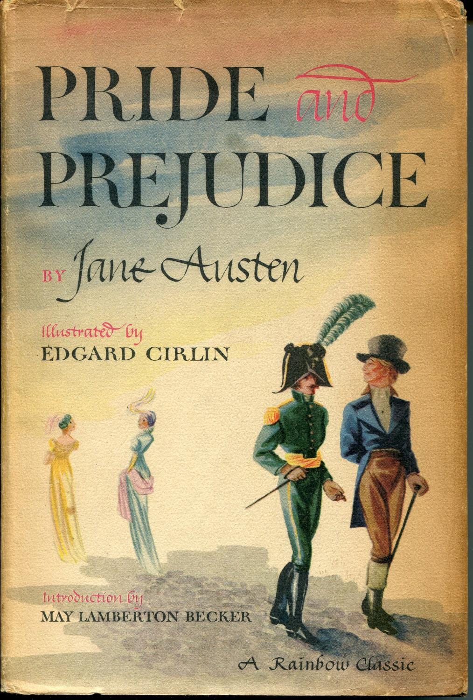
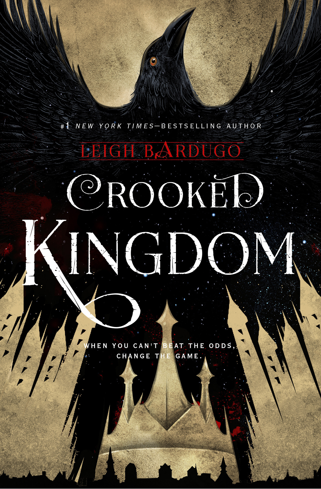

Harry Potter and the Deathly Hallows is the seventh and final novel of the Harry Potter series, written by British author J. K. Rowling. The book was released on 21 July 2007 by Bloomsbury Publishing in the United Kingdom, in the United States by Scholastic, and in Canada by Raincoast Books, ending the series that began in 1997 with the publication of Harry Potter and the Philosopher's Stone. The novel chronicles the events directly following Harry Potter and the Half-Blood Prince (2005)
Pride and Prejudice is a novel by Jane Austen, first published in 1813. The story follows the main character, Elizabeth Bennet, as she deals with issues of manners, upbringing, morality, education, and marriage in the society of the landed gentry of the British Regency. Elizabeth is the second of five daughters of a country gentleman, Mr Bennet, living in Longbourn.
Despite Warner Bros. and Schumacher's interest with Year One, Lee Shapiro, a comic book fan, and Stephen Wise pitched the studio with a script titled Batman: DarKnight in mid-1998. DarKnight had Bruce Wayne giving up his crime fighting career, and Dick Grayson attending Gotham University.[51] Dr. Jonathan Crane uses his position as professor of psychology at Gotham University and as head psychiatrist at Arkham Asylum to conduct his experiments into fear (this element would later appear in Batman Begins).
Gone with the Wind is a novel written by Margaret Mitchell, first published in 1936. The story is set in Clayton County and Atlanta, both in Georgia, during the American Civil War and Reconstruction Era. It depicts the struggles of young Scarlett O'Hara, the spoiled daughter of a well-to-do plantation owner, who must use every means at her disposal to claw her way out of poverty following the destructive Sherman's March to the Sea. This historical novel features a Bildungsroman or coming-of-age story, with the title taken from a poem written by Ernest Dowson.
To Kill a Mockingbird is a novel by Harper Lee published in 1960. It was immediately successful, winning the Pulitzer Prize, and has become a classic of modern American literature. The plot and characters are loosely based on the author's observations of her family and neighbors, as well as on an event that occurred near her hometown in 1936, when she was 10 years old.
The Book Thief centers on the life of Liesel Meminger, a ten-year-old girl living in Germany during World War II. Liesel's experiences are narrated by Death, who describes both the beauty and destruction of life in this era. After her brother's death, Liesel arrives in a distraught state at the home of her new foster parents, Hans and Rosa Hubermann. During her time there, she is exposed to the horror of the Nazi regime and struggles to find a way to preserve the innocence of her childhood in the midst of her destructive surroundings.